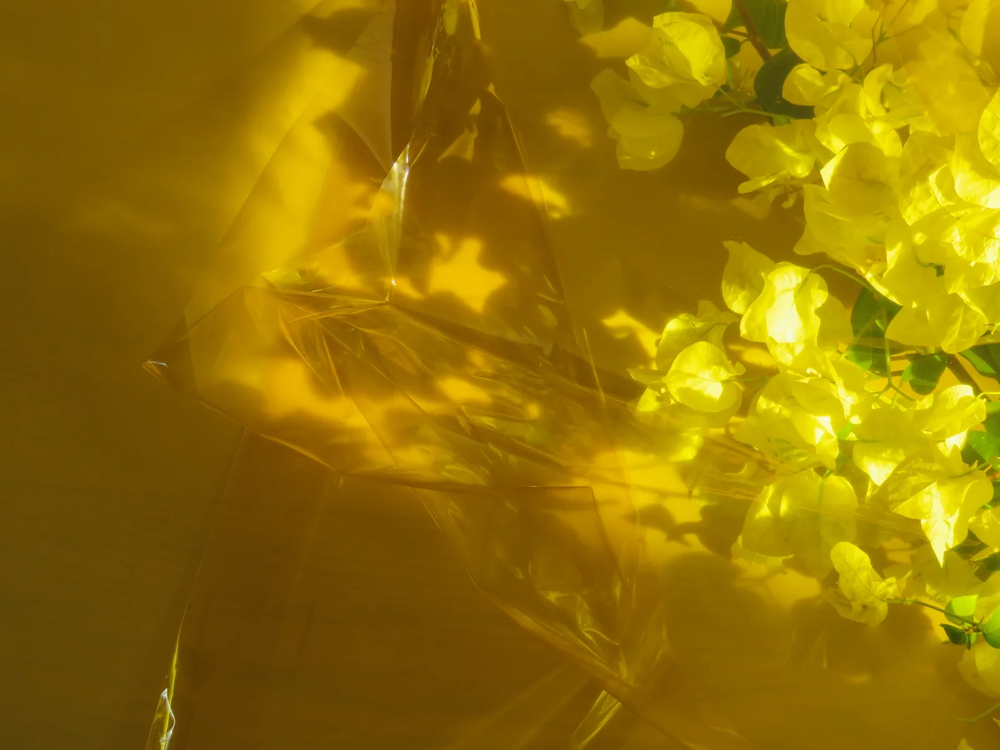
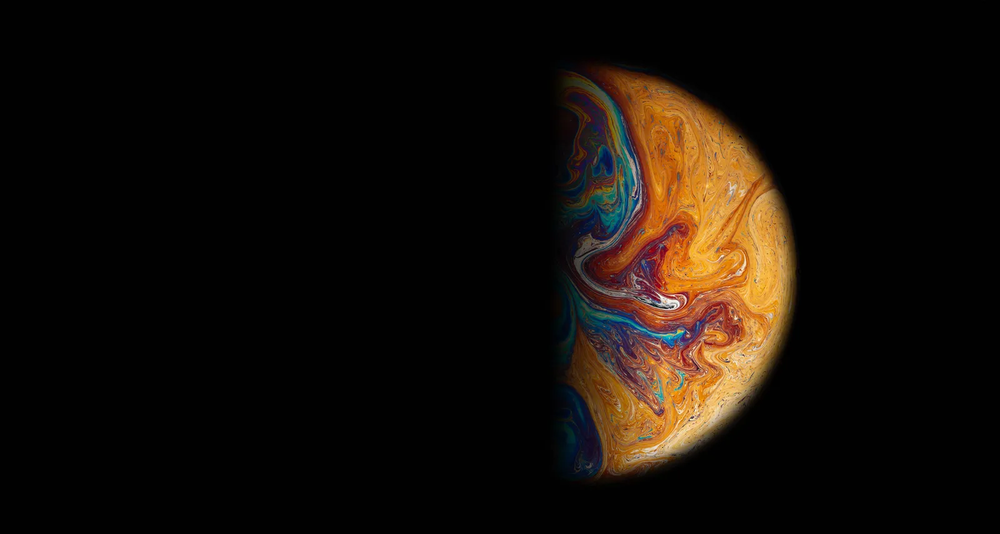

YIQI
Home
FX
HoneyBear
Horse
Alice
Animation
Overpower
Hedwig
Modeling
Apple
OSL
Procedural Building(Houdini)
Customized Building(Maya)
Lighting/Compositing
Lighting
Tools
Idle
Unreal
About
博客
Blog X Special Project | PART2
Blog X Special Project | PART1
Blog X Harbour X ETC
Blog X Harbour
Blog X VSFX728
EN
繁
简
制作记录
博客
项目与课程的每周进度记录。

Blog X Special Project | PART2
10 篇记录
→
Blog X Special Project | PART1
10 篇记录
→
Blog X Harbour X ETC
9 篇记录
→
Blog X Harbour
9 篇记录
→

Blog X VSFX728
4 篇记录
→